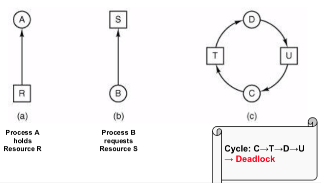
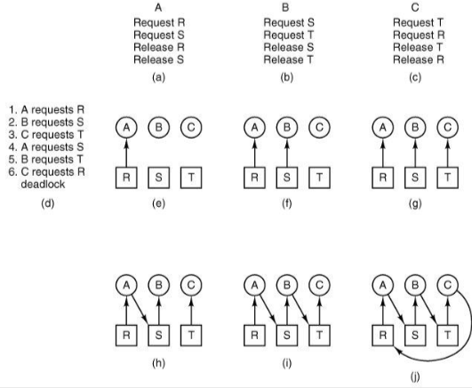
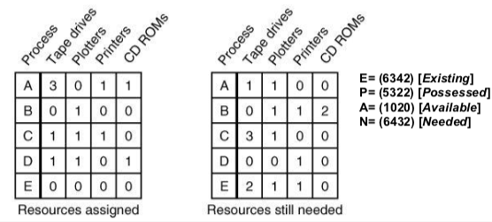

Deadlocks
A set of processes is deadlocked if each process in the set is waiting for an event that only another process in the set can cause.
Starvation: nobody gets resources?
Livelock: many instructions executed but no progress
Conditions:
Mutual exclusion: each resource is assigned to at most one process
Hold & wait: processes can request resource when holding another one
No preemption: resources are not preemptable, i.e. can’t be taken away from a process
Circular wait: chain of at least two processes must be waiting for a resource held by next process in the chain

Handling:
ignore the problem — no action taken
deadlock detection — detect and perform recovery
deadlock prevention — prevent any of deadlock conditions
deadlock avoidance — allocate resources to avoid deadlocks
Ignore the problem
become an ostrich and imagine the problem doesn’t exist.
assumes deadlocks are rare, the cost of handling them is high, and their effects are ok.
in practice, only last resort.
Deadlock detection
can be used when simple & efficient detection mechanisms are available.
detection
check for cycles in the resource allocation graph
track progress, time out if necessary
detect explicitly if e.g. OOM
recovery
in practice, solution of choice when adequate detection/recovery mechanisms are available
Deadlock prevention
mutual exclusion:
hold & wait
no preemption:
circular wait:
in practice, adopted in particular domains (e.g. two-phase locking in transaction processing systems)
Deadlock avoidance
single resource: Banker’s algorithm (Dijkstra)
customers (processes) request credits (resources)
banker (OS) only satisfies requests resulting in safe states
a state is safe if there exists a sequence of other states that allows all customers to complete
max credit demands are known in advance
multiple resources:

select row R whose unmet resource needs N are all <= A
mark R as terminated and add its resources to A vector
repeat until completion (safe) or deadlock (unsafe)
in practice, rarely an option (hard to determine resource needs in advance)